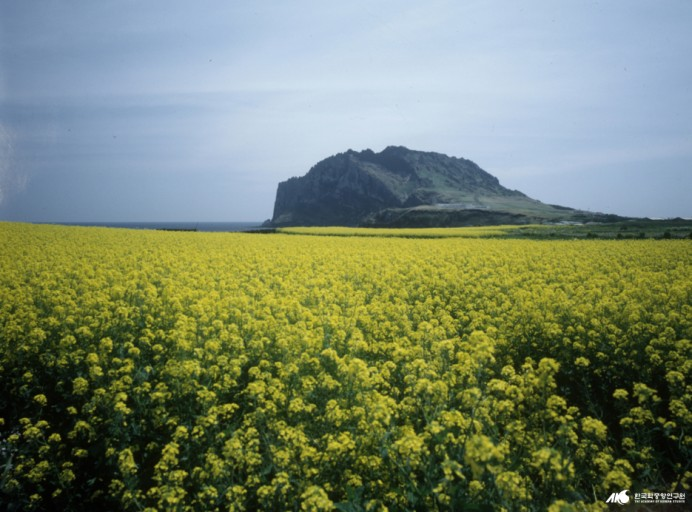

- 

한라산
높이 1,947.269m로 남한에서 가장 높은 산이다. 제3기 말∼제4기 초 용암이 분출하여 형성되었다.현무암으로 이루어져 있으며 줄기는 제주도 중앙에서 동서로 뻗는다.
남쪽은 경사가 심한 반면 북쪽은 완만하고, 동서쪽은 비교적 높으면서도 평탄하다.
1970년 국립공원으로 지정되었고, 해마다 1월 마지막 주에는 어리목을 중심으로 눈꽃축제가 열린다.
동북쪽 기슭에 대한불교조계종 제23교구 본산인 관음사가 있다.
댓글
ID : 20160356
이 사진을 보니 저도 다시 제주도 가고싶네요.
ID : 20170358
등산,,,보기만 해도 힘듭니다.
ID : 20170411
혹시 무슨 카메라로 찍으셨나요???
ID : 20180350
한라산은 한번도 안가봤는데 다음에 가봐야겠네요.
ID : 20190384
한라산 근처의 저희 흑돼지집 놀러오세요.
ID : 20190385
유채꽃밭에 들어가고 싶어요.
ID : 20160352
한라산 안가봤는데 저도 한번 가봐야겠네요.
ID : 20170374
유채꽃들이 아름답네요.